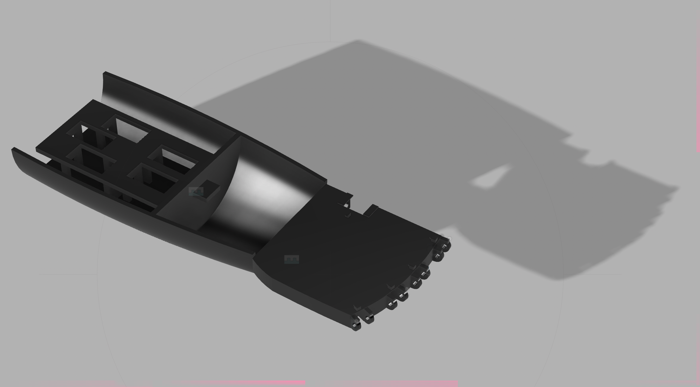
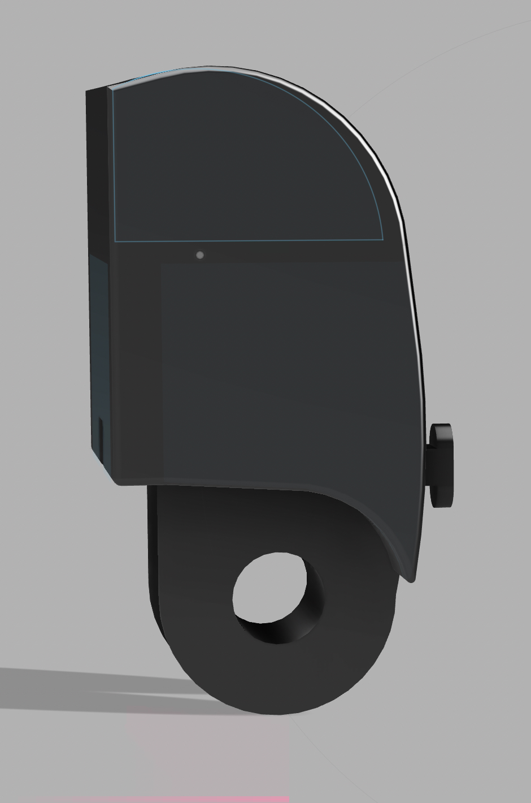
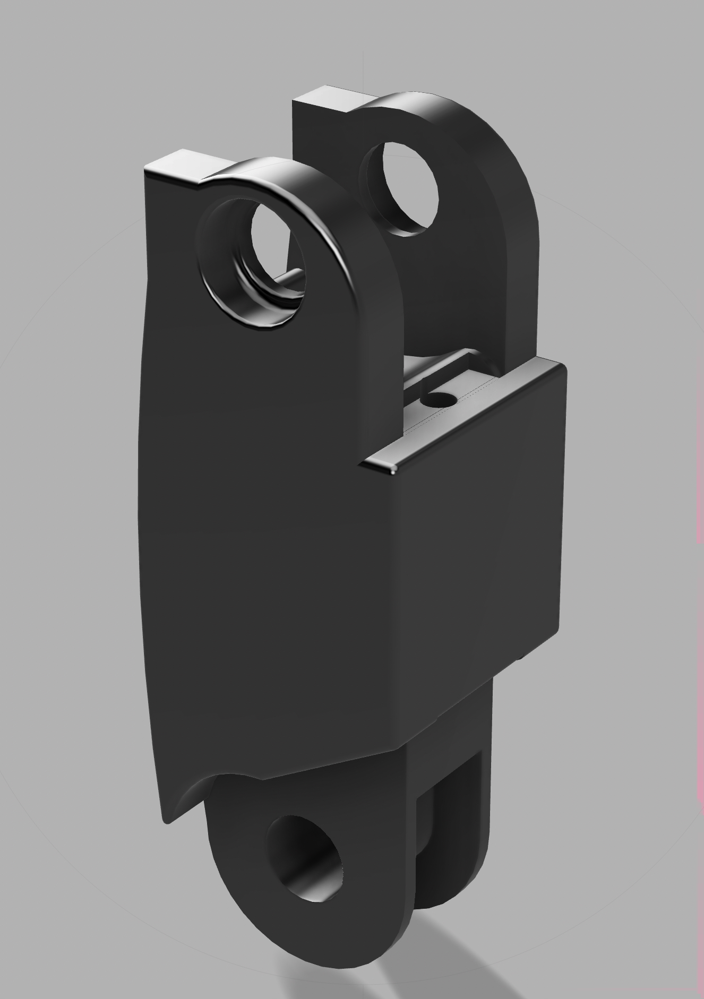

← Back to Projects
Project Overview
During the summer of 2024, I started designing a robotic prosthetic hand that enables users to feel what they're touching through haptic feedback. The goal is simple but impactful: help people with prosthetic hands feel pressure and texture through their fingertips, restoring a sense of touch that's often lost with traditional prosthetics.
I'm working on this project with two of my fellow Mechanical Engineering students at Rice, Veer Khona and Eddie Zheng. What started as a summer boredom project has evolved into a comprehensive design challenge that combines mechanical design, electronics, and human-centered engineering.
Why This Project Matters
Most prosthetic hands provide basic grip functionality but lack sensory feedback. Users can't feel how hard they're gripping or what texture they're touching. Our design integrates force-sensitive resistors at each fingertip that map pressure readings to vibration motors on the user's forearm, creating a tactile sensation that mimics the sense of touch.
Technical Specifications
5
Articulated Fingers
90°
Range of Motion per Joint
0-10N
Grip Pressure Detection
6
Design Iterations
Key Components
- Control System: Arduino Uno microcontroller processing sensor data at 100Hz with PID control algorithm
- Sensors: FSR Model 402 force-sensitive resistors at each fingertip detecting 0-10N grip pressure with ±5% accuracy
- Actuation: Servo motors in forearm pulling fishing line through finger segments for articulated movement
- Haptic Feedback: Vibration motors (0-255 PWM) mounted on user's forearm providing proportional force feedback
- Return Mechanism: Rubber bands with custom hook design providing elastic return to open position
- Structure: 3D-printed components designed in Fusion 360 with male/female joint system
Design Process & CAD Renderings
We're currently in the low-fidelity prototype stage, working through multiple design iterations in Fusion 360. Each component has been carefully designed to balance functionality, manufacturability, and ease of assembly.

Complete assembly showing forearm, palm, and servo mounts

Fingertip design with FSR sensor cavity and connection interface

Phalange with rod joints, rubber band hooks, and fishing line holes
Iterative Design Evolution
Forearm & Servo Mounting
Our first major challenge was determining where to position the servo motors and haptic feedback motors within the limited space of the forearm. We went through several iterations testing different servo orientations and mounting strategies.
Key Design Decisions:
- Servo motors mounted in forearm section to reduce weight in the hand
- Individual servo mounts for each finger allowing independent control
- Integrated channels for fishing line routing from servos through palm to fingers
- Haptic vibration motors positioned along forearm for maximum sensation transfer to user
Fingertip Sensor Integration
The fingertip design went through several major revisions as we experimented with different approaches to integrate the FSR sensors while keeping them protected and functional.
Iteration 1: Direct Adhesive Mount
Our first approach was to glue the FSR sensor directly to the fingertip. While simple, this left the sensor exposed and vulnerable to damage, and didn't provide a clean aesthetic.
Iteration 2: Surface Mount Design
We tried mounting the sensor on the outer surface with a protective cover, but this made the fingertip bulky and didn't reliably transmit force to the sensor.
Final Design: Integrated Mold
We settled on a molded cavity design that encapsulates the FSR sensor inside the fingertip. The curved outer surface naturally channels force to the sensor while keeping it hidden and protected. This design looks professional and performs reliably.
Phalange (Finger Segment) Development
The finger segments (phalanges) required the most iterations as they integrate multiple mechanical systems: joints, actuation, and return mechanisms.
Challenges We Solved:
- Rubber Band Hook Design: Initial hooks were too shallow and rubber bands would slip off during movement. We redesigned with deeper, more secure hooks that reliably retain the bands through full range of motion.
- Fishing Line Routing: Determining optimal hole placement along the phalange body for fishing line was critical. Too close to the joint and the line would bind; too far and we'd lose mechanical advantage. We iterated hole positions through testing to find the sweet spot.
- Wiring Channels: Had to integrate dedicated channels for sensor wiring from fingertips through each phalange segment without interfering with fishing line or joint movement.
- Joint Mechanism: Tested several joint designs before settling on male/female cylindrical connections with through-holes for metal rod pins. This provides smooth rotation, easy assembly, and good durability.
Testing & Current Status
Component Testing
While we haven't assembled the complete prototype yet, we've been systematically testing individual components:
- FSR Sensor Calibration: Using a resistance meter, we've tested grip pressure detection accuracy and confirmed the FSR 402 sensors provide reliable readings across the 0-10N range we need.
- Servo Actuation: Tested finger bending motion with different servo torques and fishing line tensions to optimize for smooth, controlled movement without overloading the motors.
- Haptic Feedback Mapping: Programmed Arduino to map sensor resistance values to PWM vibration motor intensities, testing different mapping algorithms to find the most intuitive tactile sensation.
- Joint Durability: Cycled the phalange joints through hundreds of repetitions to verify the male/female pin connection maintains smooth rotation without excessive wear.
Current Project Status: Low-Fidelity Prototype
We're currently at the low-fidelity prototype stage. All major components have been designed in CAD and individually tested, but we haven't yet assembled the complete integrated system. Our next steps are:
- 3D print all finger segments and assembly components
- Complete forearm assembly with servo motors and electronics
- Integrate fishing line actuation system
- Install FSR sensors in all fingertips
- Connect haptic feedback motors to forearm
- Test complete system with grip and release cycles
- Refine control algorithms based on real-world testing
What I Learned
Technical Skills
- CAD Modeling: Became proficient with Fusion 360 for complex assemblies with moving parts, learned to design for 3D printing manufacturability
- Arduino Programming: Implemented PID control for servo motors and real-time sensor data processing
- Sensor Integration: Gained hands-on experience with FSR sensors, understanding resistance-to-force relationships and calibration techniques
- Mechanical Design: Learned about joint mechanisms, actuation systems, and designing for assembly and disassembly
Design Process
- Iteration is Essential: Our best solutions came after multiple failed attempts. The fingertip sensor design, for example, only worked well on the third major revision.
- Test Early, Test Often: Testing individual components before full assembly saved us from discovering major flaws late in the process.
- Balance Complexity and Functionality: Had to make trade-offs between ideal functionality and practical manufacturability, especially with 3D printing constraints.
- User-Centered Design Matters: Kept returning to the question: "Will this actually help someone use a prosthetic hand more effectively?" This guided our feature prioritization.
Collaboration
Working with Veer and Eddie taught me a lot about collaborative engineering. We divided responsibilities based on our strengths—I focused primarily on mechanical design and CAD modeling, while my teammates worked on electronics integration and programming. Regular team meetings kept us aligned and allowed us to catch design conflicts early.
Next Steps
As we move forward with this project, our priorities are:
- Complete Low-Fi Assembly: 3D print and assemble all components to create our first working prototype
- System Integration Testing: Test the complete integrated system with all sensors, actuators, and feedback mechanisms working together
- Control Algorithm Refinement: Tune PID parameters and haptic feedback mapping based on real-world performance
- User Testing: If possible, get feedback from potential users or occupational therapists about the design and functionality
- Medium-Fidelity Iteration: Based on testing results, redesign problem areas and move to more refined fabrication methods
- Grip Testing: Evaluate ability to grasp different objects (soft/hard, light/heavy) and adjust force sensing accordingly
Project Impact
While this started as a summer project to learn new skills and stay engaged with engineering, it's evolved into something potentially meaningful. If successful, our design could demonstrate a low-cost approach to adding sensory feedback to prosthetic hands, making this technology more accessible to people who need it.
← Back to Projects